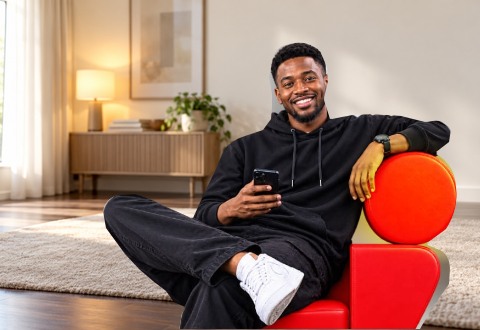

LOCAL REVIEW · 26 OCTOBER 2026
Campaign photography in A and E
Original campaign subjects in room compositions, with sofa and seating context. Only the room backgrounds are rebuilt; people are not repainted. Existing heroes and customer journeys are preserved. My Ikonectt uses the campaign man in A and retains the approved woman with her laptop in E.
Read the integration and source-quality notes
Photographic masters with room context
Family · 640 × 320
Individual · 480 × 330 Small flyer sources limit subject sharpness. Rebuilt surroundings keep the room context; hidden human anatomy is not invented. No flyer text or pricing is installed; the catalogue discrepancy is recorded separately.
Template E
Open Residential · Open homepage
Residential experience
Desktop · 1440px
Mobile · 390px
My Ikonectt
Desktop · 1440px
Before After
After Mobile · 390px